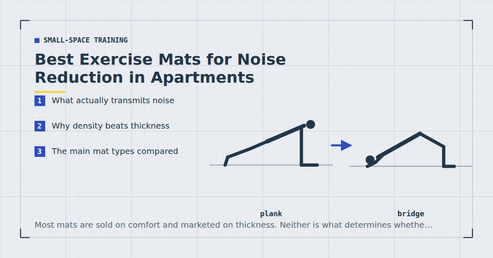

Small-Space Training
Best Exercise Mats for Noise Reduction in Apartments
Most mats are sold on comfort and marketed on thickness. Neither is what determines whether your downstairs neighbour hears you, and thicker is sometimes worse.

If you train in a flat, the mat is the one piece of equipment with a genuine acoustic job to do. It is also the one most often bought on the wrong criteria — usually thickness, because that is the number printed on the packaging.
What follows is what actually matters, why some expensive mats perform worse than a cheap alternative, and where the money is best spent.
What actually transmits noise
Two different things happen when you land on a floor, and they need different solutions.
Impact noise is the sound generated at the point of contact and radiated into the room you are in. A mat handles this well — any soft layer between your foot and the floor reduces it substantially.
Structure-borne vibration is force transmitted into the joists and radiated as sound in the room below. This is the one your neighbour actually hears, and it is much harder to address. It depends on the force reaching the floor, which depends on how much energy the mat absorbs and dissipates rather than simply how soft it feels.
The distinction explains a common frustration: a mat that makes the exercise feel quieter to you may do considerably less for the flat below.
Why density beats thickness
A thick, soft, low-density foam mat compresses easily and then bottoms out. Once it has fully compressed under your landing, the remaining force goes straight into the floor as though the mat were not there. It feels soft and performs poorly under real impact.
A denser mat compresses less but dissipates more energy as it does, and it does not bottom out. It feels firmer underfoot and transmits less.
The practical rule: for impact noise, choose a mat you cannot easily compress to nothing between finger and thumb. If you can squash it flat with light pressure, your bodyweight landing on it will do the same.
The main mat types compared
| Type | Noise reduction | Comfort | Notes |
|---|---|---|---|
| Rubber gym mat / horse stall mat | Best | Firm | Heavy, dense, expensive, hard to store |
| Rubber-backed carpet tile | Very good | Firm | Cheap, modular, unglamorous |
| EVA foam puzzle tiles | Good | Medium | Best all-round compromise for a flat |
| Thick NBR fitness mat | Moderate | Soft | Comfortable, bottoms out under impact |
| Standard yoga mat | Poor | Thin | Grip and comfort, not acoustics |
| Rug or blanket | Poor to moderate | Varies | Better than nothing; slips |
For most people in a flat, EVA foam puzzle tiles are the right answer. They are dense enough to perform, cheap, modular so you can cover the area you actually use, and they can be lifted and stacked when not in use — which matters more than it sounds in a small flat. The broader trade-offs between mat types are in yoga mat vs exercise mat vs puzzle tiles.
If noise is a serious problem and storage is not, a rubber gym mat is genuinely the best-performing option. They are heavy, which is precisely why they work.
How thick, actually
For a dense material, 10 to 20 millimetres does most of the available work. Going from 6mm to 12mm produces a clear improvement; going from 20mm to 40mm of the same material produces relatively little additional benefit and starts to create problems.
Those problems are worth knowing. A very thick soft mat is unstable underfoot, which makes single-leg work such as Bulgarian split squats genuinely harder to balance on and slightly less safe. It also raises you enough to matter in a room with low ceilings — see low-ceiling workouts.
Around 12 to 15mm of dense EVA foam is the sensible default: enough to matter acoustically, stable enough for single-leg work, thin enough to stack.
If you can compress it flat between finger and thumb, your bodyweight will do the same. Softness and performance are not the same thing.
The coverage mistake
The most common error is buying one mat sized for where your feet go and leaving your hands on the bare floor.
Plank work, mountain climbers, push-ups and bear crawls all put repeated force through the palms, and hands drumming on a hard floor transmit a surprising amount. A session of mountain climbers on a well-matted floor with bare hands is not a quiet session.
Cover the whole area you use, which is roughly two metres by one — the measurements for each exercise are in how much floor space you need. This is the strongest argument for modular tiles: you can buy the area rather than the mat.
Cheaper alternatives that work
Three options that cost little and perform better than their price suggests.
Rubber-backed carpet tiles. Sold for flooring rather than fitness, so they are considerably cheaper per square metre than anything marketed to exercisers. Dense rubber backing is exactly the right material. Unattractive, and highly effective.
A folded duvet or thick blanket under a mat. Adds mass and dissipation for nothing. Slips, so it needs a mat on top rather than being used alone.
Interlocking foam tiles sold for children's play areas. Same material as fitness tiles, frequently cheaper, and often in larger packs. Check the density rather than the branding.
More options along these lines are in the best cheap home gym equipment under $50.
Placement matters as much as the mat
This is the free intervention most people never make.
Floors deflect most at the centre of a span and least near their supports. Moving your training area from the middle of a room to within about a metre of a load-bearing wall reduces transmitted vibration measurably, and costs nothing at all.
Combined with a dense mat and no jumping, that is most of the problem solved. The remaining variable is what you actually do — the exercise substitutions are in no-jump cardio, and the wider approach in quiet home workouts.
One thing a mat cannot fix: exercises involving genuine impact. No commercially available mat makes box jumps acceptable in a first-floor flat. If your programme depends on jumping, the mat is not the variable to change — the exercises are.
Is a mat worth buying at all?
If you train on carpet and do not live above anyone, honestly, probably not. Carpet with underlay already provides more impact absorption than most fitness mats, and the main remaining benefit is a defined, clean surface — which is a comfort and hygiene consideration rather than an acoustic one.
The case for buying one is strong in three situations. On a hard floor, where floor-based exercises otherwise become uncomfortable enough to get quietly dropped from sessions — and the exercises that get dropped are almost always the core and glute work. In a flat above someone, where the acoustic argument applies. And where the training area is shared with normal domestic life, because a mat that rolls out defines the space and reduces the setup friction that stops sessions happening.
That last point is worth more than it appears. Adult guidance asks for muscle-strengthening activity on at least two days a week,1 and the practical barrier for most people is not knowing what to do but the accumulated small frictions between deciding to train and starting. A mat that lives permanently where you train removes one of them. The wider version of this argument is in setting up a home gym corner.
What a mat will not do is make an unsuitable space suitable. It does not add floor area, it does not reduce ceiling height problems — in fact it slightly worsens them — and it does not make impact work acceptable above a neighbour. Buy one for comfort, definition and moderate noise reduction, and solve the other constraints separately.
Where to go next
For the complete approach to training without disturbing anyone, see quiet home workouts. For how mat choice fits into a wider equipment plan, see the minimalist home gym guide.
Frequently asked questions
What is the best exercise mat for noise reduction?
Dense EVA foam puzzle tiles are the best all-round choice for a flat: dense enough to perform, cheap, modular, and stackable. A heavy rubber gym mat performs better still if storage is not a concern.
Does a thicker mat reduce more noise?
Only up to a point, and only if the material is dense. A thick soft foam mat compresses fully under impact and then transmits force as though it were not there. Around 12 to 15mm of dense material is the sensible target.
Do yoga mats reduce impact noise?
Very little. Yoga mats are designed for grip and a thin layer of comfort, not for absorbing impact energy. They are better than a bare floor and considerably worse than any dense mat.
How much floor should I cover with mats?
The whole area you train in, roughly two metres by one. Covering only where your feet go and leaving your hands on bare floor is the most common mistake — plank work and mountain climbers transmit a lot through the palms.
Can a mat make jumping acceptable in an apartment?
No. No commercially available mat makes genuine impact work acceptable above someone else. If your programme depends on jumping, change the exercises rather than the mat.
Is there a cheap alternative to an exercise mat?
Rubber-backed carpet tiles are sold for flooring, cost far less per square metre than fitness-branded products, and use exactly the right material. Interlocking foam tiles sold for children are often cheaper than identical fitness tiles.
Sources and further reading
- NHS. Physical activity guidelines for adults aged 19 to 64.
- World Health Organization. WHO Guidelines on Physical Activity and Sedentary Behaviour. 2020.
- MedlinePlus, U.S. National Library of Medicine. Exercise and Physical Fitness.
- NHS. Exercise — Live Well.
Comments
Comments are not enabled yet. Add a hosted comment embed (Disqus, Commento, Giscus) inside this container when you are ready.